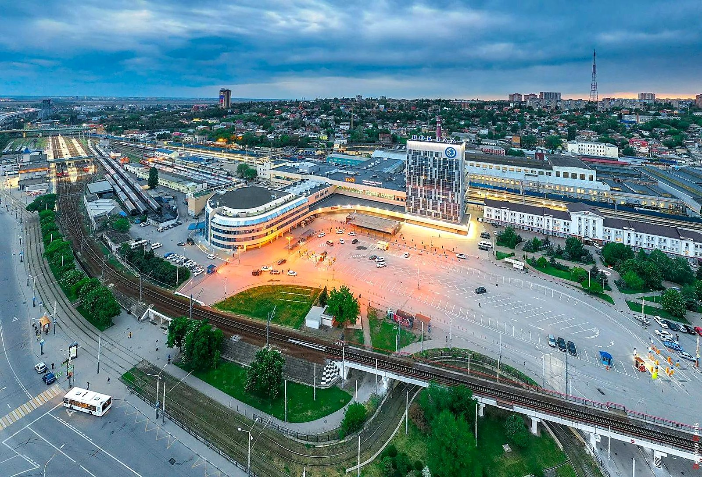
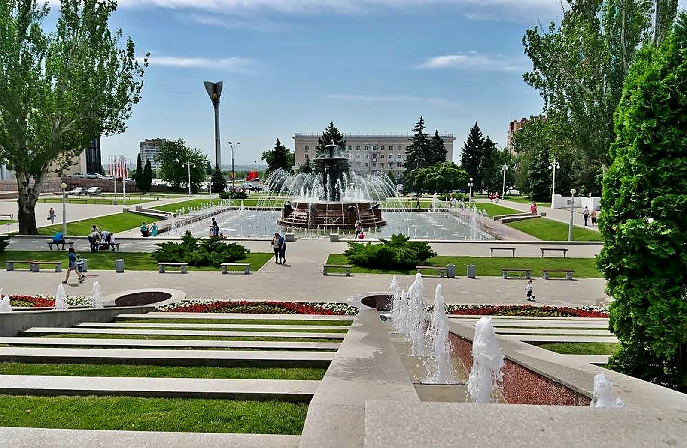
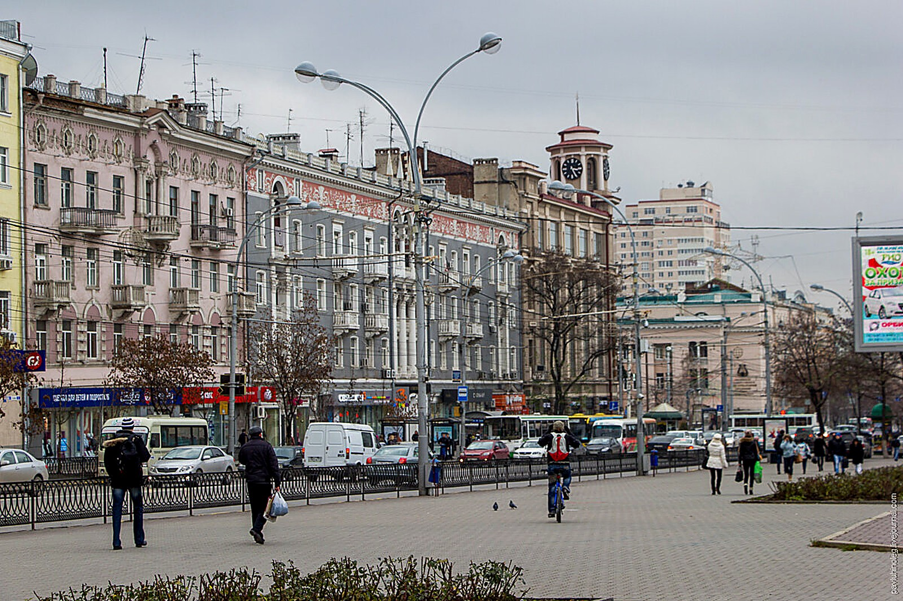

↖ СтенаПрохода нет
↖ СтенаПрохода нет

↑ Вокзал «Ростов-Главный»С чемоданом на перроне ↗ Привокзальная площадьТакси, трамваи, суета
← СтенаПрохода нет
↗ Привокзальная площадьТакси, трамваи, суета
← СтенаПрохода нет

Цель: найти Академию архитектуры и искусств ЮФУ
Театральная площадь
Одна из главных площадей города. По вечерам здесь включают подсветку и фонтаны.
Подсказка: Академии здесь нет. Загляните на главную улицу города, где в старинных домах теперь кафе и магазины.
 → Театр драмы имени ГорькогоЗдание в форме трактора
↙ СтенаПрохода нет
→ Театр драмы имени ГорькогоЗдание в форме трактора
↙ СтенаПрохода нет

↓ Большая Садовая улицаГлавная улица города ↘ Здание городской думыАдминистративное здание на Садовой
↘ Здание городской думыАдминистративное здание на Садовой